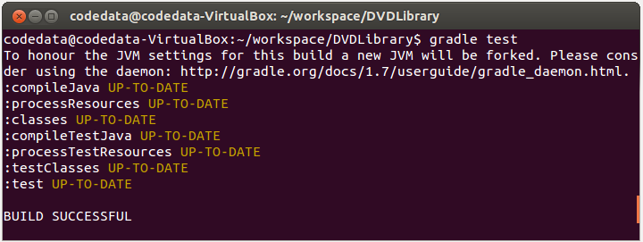
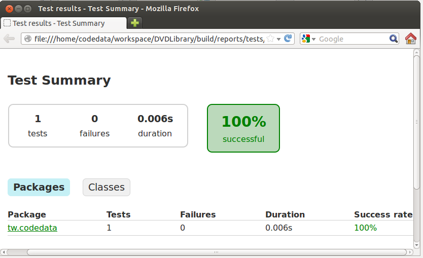
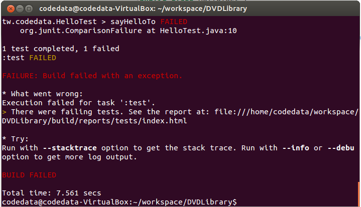
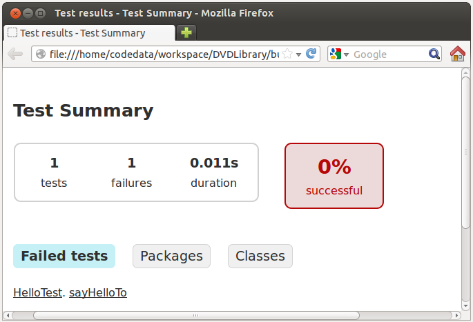

在先前一連串的練習中，我們作了數次的重構（Refactoring），每次重構時是不是會有些怕怕的，如果不小心改爛了怎麼辦？每次重構完總得執行整個應用程式，看看功能是不是正確？只不過，對這種測試方式終究有些不安，對吧！？
你應該為撰寫的程式加入一些專門用的測試程式，在測試中最基本的單位是單元測試（Unit test），指的是測試一個工作單元（a unit of work）的行為。舉例來說，對於建築橋墩而言，一個螺絲釘、一根鋼筋、一條鋼索甚至一公斤的水泥等，都可謂是一個工作單元，驗證這些工作單元行為或功能 （硬度、張力等）是否符合預期，方可確保最後橋墩安全無虞。
在 Java 的世界談到單元測試，基本上都得認識一下 JUnit 這個元老級的單元測試框架，IDE 多半都有整合這個框架。在這邊先介紹一下如何在 Gradle 中結合 JUnit 作一個簡單的測試。
練習 15：在 Gradle 中使用 JUnit
首先，你必須在 build.gradle 中增加
'java' 這個 plugin，它內建了 test 的任務定義：
apply plugin: 'java'我們要使用 JUnit 4 來撰寫單元測試，因此要在
dependencies 中定義 testCompile：
dependencies {
testCompile 'junit:junit:4.+'
略 ...
}從之前的練習中已經知道，Gradle 中 Java 程式碼，必須定義在 src/main/java 之中，並依套件設定在對應的目錄放置 .java 程式碼，這邊先撰寫一個簡單的
Hello 類別：
package tw.codedata;
public class Hello {
public String sayHelloTo(String name) {
return String.format("Hello, %s!", name);
}
}如果你傳給
Hello 實例的 sayHelloTo 方法一個字串，例如 "CodeData"，那麼它會傳回一個字串 "Hello, CodeData!"，你要怎麼確定這個方法是正確的呢？直接撰寫個測試程式輸出字串顯示在文字模式下，看是不是會顯示 Hello, CodeData! 嗎？如果有 1000 個測試，難不成要看 1000 個顯示結果來確定測試是否正確？
不是的！使用 JUnit 的話，可以自動運行測試並收集測試結果，你可以如下定義一個測試案例（Test case）：
package tw.codedata;
import static org.junit.Assert.*;
import org.junit.*;
public class HelloTest {
@Test
public void sayHelloTo() {
Hello hello = new Hello();
assertEquals("Hello, CodeData!", hello.sayHelloTo("CodeData"));
}
}對於一個
Hello 類別，你可以定義一個 HelloTest 來與之對應，你可以在某個方法中定義想要的測試過程，該方法要使用 @Test 標註，assertEquals 是個斷言方法，第一個參數接受預期值的指定，第二個參數接受實際執行結果，如果兩者相等則斷言成功，否則就測試失敗。
那麼 HelloTest.java 要放在哪呢？必須放在 src/test/java 中，並依套件設定在對應的目錄放置 .java 程式碼。
目前原始碼的位置對應是：
- src/main/java/tw/codedata/Hello.java
- src/test/java/tw/codedata/HelloTest.java
gradle test 指令，如果測試成功的話，會顯示以下的畫面：

在 build/reports/tests 中，也會產生一份 HTML 報表：

要是測試失敗的話，會有類似以下的畫面：

測試失敗時報表的呈現方式是 …
